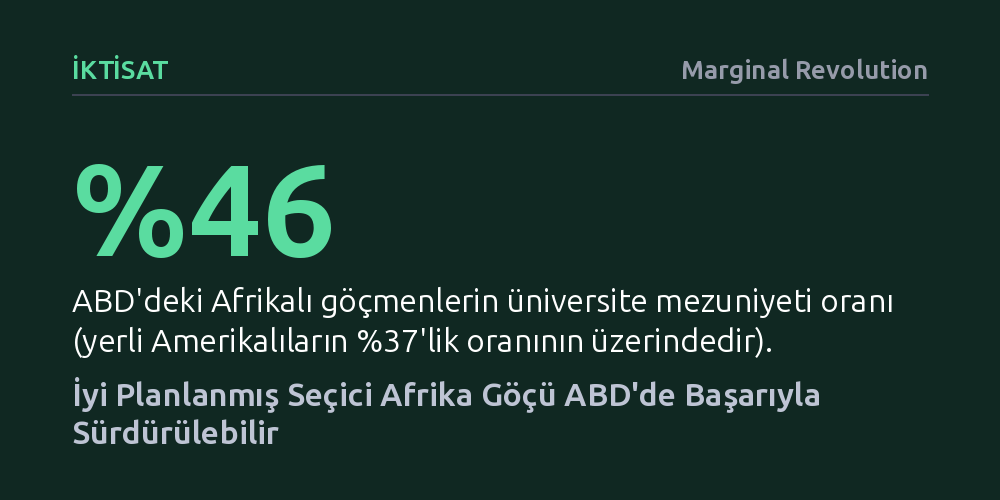

IKTISAT · Marginal Revolution · 2026-10-15
ABD'deki Afrikalı göçmenler, hem yerli Amerikalılardan daha yüksek üniversite mezuniyeti oranına hem de beyaz nüfusu aşan medyan hanehalkı gelirine ulaşıyor. Bu tablonun sürmesi, kapıları kontrolsüz açmak yerine niteliği öne çıkaran mevcut seçici göç politikasının korunmasına bağlı.
Afrika'dan gelen göçün kaçınılmaz olarak yoksul ve vasıfsız kitleler getireceği yönündeki kalıplaşmış önyargıyı somut gelir ve eğitim verileriyle çürütüyor.

Kamuoyundaki genel algı, Afrika'dan gelişmiş ülkelere yönelen göçü çoğunlukla yoksulluk, çaresizlik ve eğitimsizlikle özdeşleştirir. Oysa Amerika Birleşik Devletleri'ndeki mevcut tablo bu basmakalıp yargıyı bütünüyle tersine çeviriyor. Güncel veriler, Sahra Altı Afrika'dan gelen göçmenlerin ABD toplumuna hem ekonomik hem de akademik açıdan son derece güçlü bir entegrasyon sağladığını gösteriyor.
Eğitim göstergeleri bu durumun en somut kanıtı niteliğinde. ABD'deki Afrikalı göçmenlerin yüzde 46'sı üniversite mezunuyken, bu oran genel göçmen nüfusunda yüzde 36'da, ABD doğumlu yerli vatandaşlarda ise yüzde 37'de kalıyor. Gelir tarafında da dikkat çekici bir üstünlük söz konusu: 2024 verilerine göre Kenyalı göçmenlerin medyan hanehalkı geliri 92.000 doları, Kamerunlularınki ise 91.000 doları aşıyor. Bu rakamlar, yaklaşık 87.000 dolar seviyesinde bulunan Hispanik olmayan beyaz Amerikalıların medyan gelirinin dahi üzerinde. Ganalıların yaklaşık 82.000 dolar, Nijeryalıların ise 78.000 dolarlık medyan gelirleri de bu yüksek ekonomik performansı teyit ediyor.
Göç tartışmalarının en hassas başlıklarından biri olan güvenlik ve suç oranları konusunda etnik temelli resmi verilere ulaşmak her zaman kolay olmuyor. ABD'nin iç içe geçmiş kozmopolit yerleşim dokusu bu tür ayrıştırmaları zorlaştırsa da toplumsal uyum açısından bu durum genel olarak olumlu bir nitelik taşıyor. Resmi istatistiklerin sınırlı kaldığı noktada ise yerel gözlemler ve bölgesel veriler tablonun netleşmesini sağlıyor.
Örneğin Kuzey Virginia'da yoğunlaşan Etiyopya ve Eritre kökenli Doğu Afrikalı toplulukların yaşadığı mahalleler, çevre sakinleri tarafından genel olarak güvenli bölgeler olarak kabul ediliyor. Benzer şekilde Houston bölgesinde hatırı sayılır bir nüfusa sahip olan Nijeryalılar, yüksek eğitim düzeyleri ve güçlü kazançlarıyla hem güvenli hem de müreffeh yerel topluluklar inşa ediyor. Dolayısıyla Afrika göçü, iddia edilenin aksine asayiş sorunları değil, istikrarlı yaşam alanları üretiyor.
Elde edilen bu etkileyici sonuçlar kendiliğinden ya da tesadüfen ortaya çıkmış değil. Sahra Altı Afrika'dan ABD'ye göç etmenin yasal ve pratik olarak oldukça zorlu bir süreç olması, doğal bir seçilim mekanizması işletiyor. Mevcut vize ve kabul süreçleri, kıtanın en çalışkan, en azimli ve en donanımlı bireylerini süzerek Amerika'ya taşıyor. Yazarın ifadesiyle, "Afrika göçü, Amerika'nın tekne dolusu yoksul, çaresiz ve eğitimsiz insan kabul etmesi anlamına gelmek zorunda değil."
Bu nedenle mevcut kazanımları korumanın yolu, sınırları rastgele açmak yerine niteliği ve liyakati öne çıkaran mevcut seçici politikaları muhafaza etmekten geçiyor. Doğru tasarlanmış bir yasal altyapı korunduğu sürece, Afrika'nın hızla büyüyen genç nüfusu ve giderek zenginleşip eğitim seviyesini yükselten toplumları ABD için büyük bir avantaja dönüşebilir. Nitelikli istihdam kanalları, öğrenci vizeleri ve üstün yeteneklilere verilen O-1 vizeleri üzerinden işleyen planlı bir akış, iki taraf için de sürdürülebilir bir ekonomik dinamizm vadediyor.